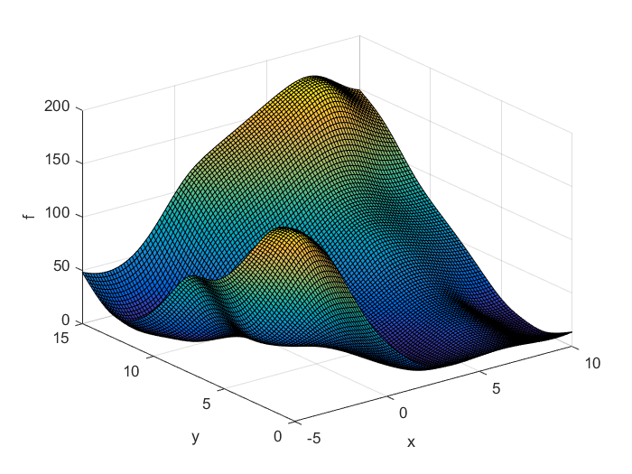
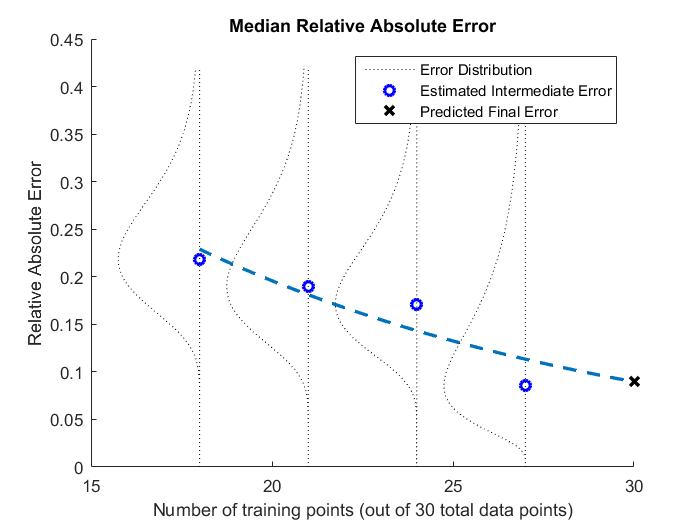

Contents
This is a sample program to demonstrate how to use PEMF
function demo_PEMF
PEMF_main_folder = cd(cd('..'));
addpath(genpath(PEMF_main_folder));
generating training points (Branin function)
x0 = lhsdesign(30,2);
for i=1:length(x0),
x(i,:) = [-5,0] + x0(i,:)*15;
y(i,:) = branin(x(i,:));
end
trying out RBF
if exist('RBF','dir')
surrogate_trainer = @(x,y) rbf_trainer(x,y);
[err1, sur_mod1] = PEMF(surrogate_trainer, x,y,'median','high');
fprintf('RBF error: %f\n\n',err1);
figure()
plotting_model(sur_mod1);
end
PEMF Starting
Iter 1: 40 of 160 intermediate models evaluated
Iter 2: 80 of 160 intermediate models evaluated
Iter 3: 120 of 160 intermediate models evaluated
Iter 4: 160 of 160 intermediate models evaluated
PEMF_Error (median): 0.089670
RBF error: 0.089670

trying out Kriging (if DACE package is available)
if exist('dace','dir')
surrogate_trainer = @(x,y) dace_trainer(x,y);
[err2, sur_mod2] = PEMF(surrogate_trainer, x,y,'median','low',[],[],[],20);
fprintf('Kriging error: %f\n\n',err2);
figure()
plotting_model(sur_mod2);
end
trying out SVR (if Libsvm package is available)
if exist('libsvm','dir')
surrogate_trainer = @(x,y) svr_trainer(x,y,[1.0 1.0]);
[err3, sur_mod3] = PEMF(surrogate_trainer, x,y);
fprintf('SVR error: %d\n',err3);
figure()
plotting_model(sur_mod3);
end
end

testing
function plotting_model(sur_mod)
x1 = [0:0.01:1]';
for i=1:length(x1),
x_te2(i) = 0 + x1(i,:)*15;
for j=1:length(x1)
x_te1(j) = -5 + x1(j,:)*15;
y_te(i,j) = sur_mod([x_te1(j),x_te2(i)]);
end
end
surf(x_te1,x_te2,y_te);
xlabel('x'); ylabel('y'); zlabel('f');
end